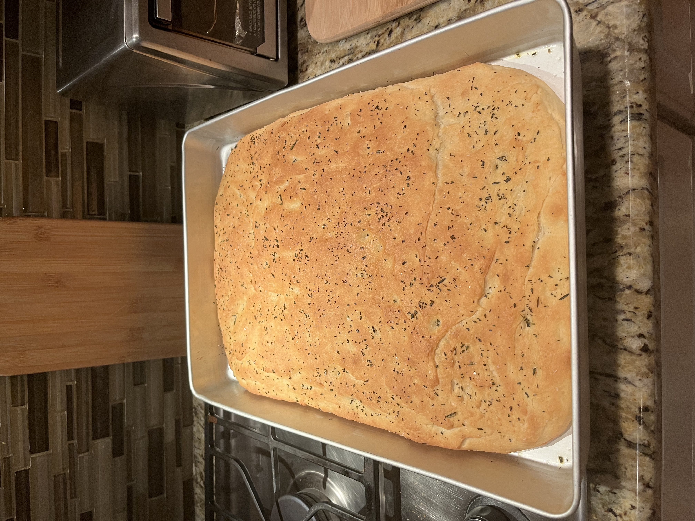

In my spare time, I enjoy traveling, reading, doing puzzles, watching movies, baking, and spending time with my family- especially my dog. Over the years, I have been to seven countries, traveling to Mexico, Italy, Switzerland, Spain, France, Canada, and the Bahamas and I would love to study abroad. My favorite films are La La Land, Everything Everywhere All At Once, and Tick, Tick... Boom!, and my favorite books are “The Seven Husbands of Evelyn Hugo” and “Ninth House”. I am an only child and I value my time with my parents greatly as they support me in all my endeavors and give a guiding hand when needed.